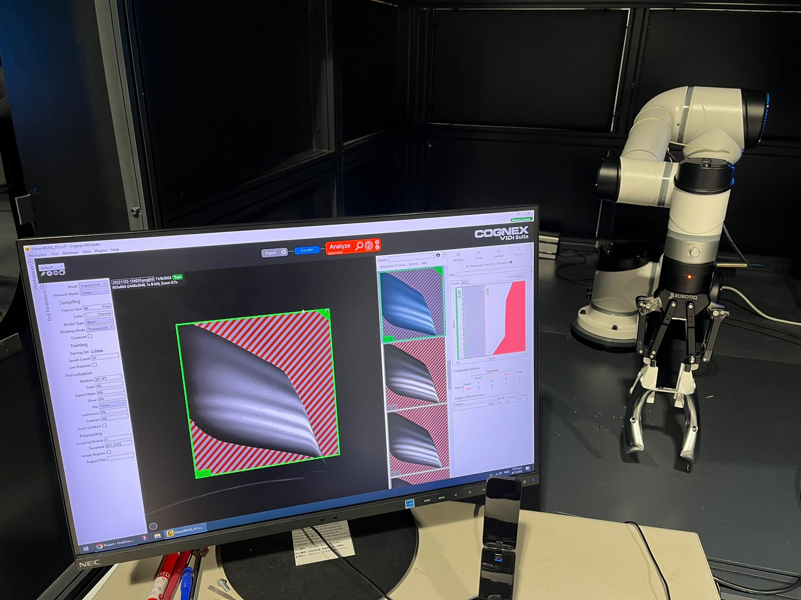
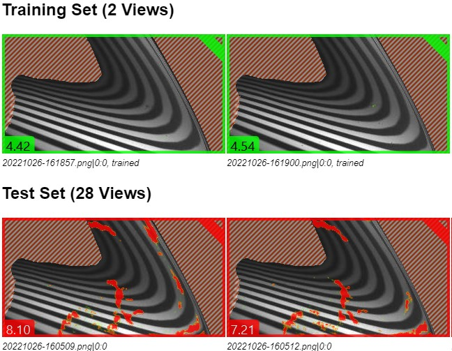
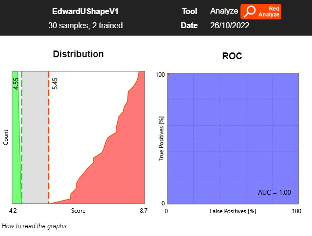

Background
This is a consultancy service on with R&D development on Autonomous Defect Detection.
The hardware of the project includes a 6-axis robotic arm, an indsutrial camera and a monitor for project strips on the parts. This project can replace manual inspection as it is very repetitve and time-consuming.
As you can see from the figure, the arm will move its EOAT to the desire location. After taking a series of photos, the photos will the be process by a deep learning software for defects recognition.
Machine Learning
After taking a series of photo, the model will then train by Good and Not Good Photos. With the pre-indicated defects on the parts, we can then instantly know about the defects on each parts.
The right hand side photo shows the traing set that I have set up on Cognex ViDi Suite. It shows that the test set with defect will automatically highlighted in red to user as showing the defects
Solution
The photos shows the passing score of defects for different parts. As I have indicated some of the parts as defect-free and some of them aren't. The graph directly shows the scores and the number of parts that didn't pass the training test.
It can be seen that this project can be implemented in different manufacturing sector, which increases the productivity of Industrial Sector in Hong Kong.
Further discussion
The project is still on-going. I will update the content once I have new information for this project.